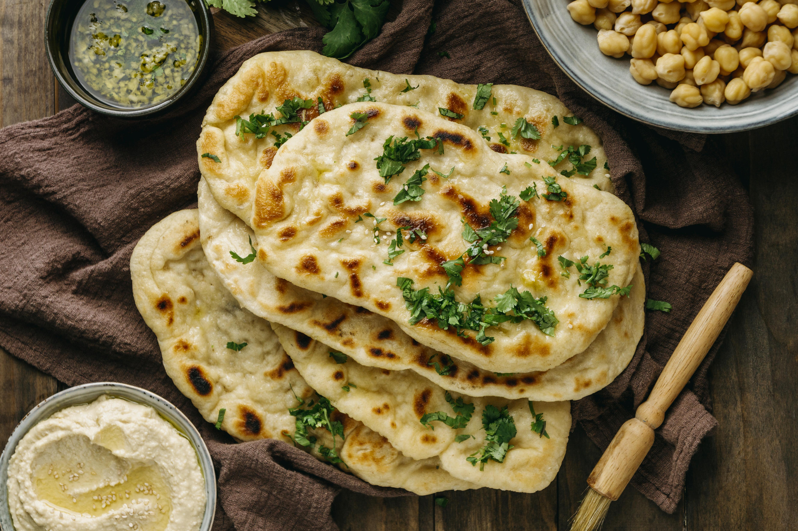

Indian Naan

Description
Naan is a popular Indian flatbread that is traditionally cooked in a tandoor (clay oven).
It is soft, chewy, and slightly charred, making it a perfect accompaniment to various Indian dishes.
- All-purpose flour: 3 cups
- Sugar: 1 teaspoon
- Dry yeast: 1 teaspoon
- Water: 1 cup (warm = approximately 110°F or 43°C)
- Yogurt: 1/4 cup plain
- Ghee or melted butter: 2 tablespoons
- Baking powder: 1/2 teaspoon
- Salt: 1/2 teaspoon
- Optional toppings: garlic, chopped cilantro, or nigella seeds (kalonji)
Steps
- Activate the Yeast: In a bowl, combine warm water and sugar. Stir until the sugar dissolves.
Sprinkle the active dry yeast over the water and let it sit for about 5-10 minutes until it becomes frothy.
- Prepare the Dough: In a large mixing bowl, combine the flour, salt, and baking powder.
Make a well in the center and add the activated yeast mixture, yogurt, and ghee.
Mix the ingredients to form a soft dough.
Knead the dough on a floured surface for about 5-7 minutes until it becomes smooth and elastic.
- First Rise: Place the dough in a lightly oiled bowl, cover it with a damp cloth,
and let it rise in a warm place for 1-2 hours or until it doubles in size.
- Preheat the Oven: If you have a pizza stone, place it in the oven and preheat
it to the highest temperature (usually around 500°F or 260°C).
- Divide and Shape: Punch down the risen dough and divide it into golf ball-sized portions.
Roll each portion into a ball and then flatten and shape it into an oval or round shape using a rolling pin.
- Optional Toppings: If desired, you can brush the naan with melted butter and sprinkle chopped garlic,
cilantro, or nigella seeds on top.
- Bake: Place the shaped naan on the preheated pizza stone or a baking sheet.
Bake for 6-8 minutes, or until the naan puffs up and develops a slight char on top.
- Serve: Remove the naan from the oven and brush it with additional melted butter if desired.
Serve the naan warm with your favorite Indian dishes, such as curry, dal, or kebabs.